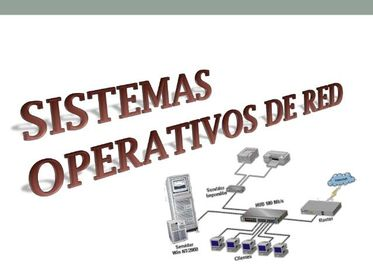

Introducción a los sistemas operativos en red
Son aquellos sistemas que mantienen a dos o más equipos unidos a través de algún medio de comunicación (físico o no), con el objetivo primordial de poder compartir los diferentes recursos hardware y software. Los sistemas operativos de red más ampliamente usados son: Novell Netware, LAN Manager, Windows Server, UNIX, Linux, LANtastic, Li, etc. Al igual que un equipo no puede trabajar sin un sistema operativo, una red de equi- pos no puede funcionar sin un sistema operativo de red. Si no se dispone de ningún equipo que monte un sistema operativo de red, no existirá una gestión centralizada de recursos, por lo que la red se convertirá en lo que hemos denominado grupo de trabajo.
Si existe un sistema operativo en red, los recursos de la red se gestionarán siempre a
través del ordenador principal de forma centralizada.
La confi guración de una red con este tipo de sistemas operativos tiene sus ventajas e
inconvenientes. Por tanto, nuestro trabajo como profesionales es determinar la confi gu-
ración que mejor se adapte a las necesidades de nuestra red.
En un entorno de red podemos diferenciar claramente dos componentes:
• Clientes. Equipos normalmente confi gurados con sistemas operativos monopuesto, que
se conectan y validan al servidor para poder empezar a trabajar en la red.
• Servidores. Equipos confi gurados con operativos de red que proporcionan recursos a
los clientes y el software de red del cliente permite que estos recursos estén disponibles
para los equipos clientes.
y utilización de los equipos clientes, al montar sistemas operativos monopuesto o mo-
nousuario. Ahora vamos a ver la instalación, confi guración y administración de los
denominados servidores, que incorporan sistemas operativos en red.
¿Qué sistema operativo en red es el adecuado para mi red?
A diferencia del sistema operativo NetWare, que no veremos en esta obra por ser un SO en red poco extendido, Windows combina el sistema operativo del equipo y de red en un mismo sistema. Microsoft suministra versiones de SO clientes y versiones de SO de servidor. Entre las versiones cliente, de las que hablamos el curso pasado, nos encontramos Windows XP Professional o Windows Vista Business. En cuanto a las versiones de servidor, Microsoft nos ofrece versiones como Windows 2000 Server, 2003 Server o 2008 Server en dife- rentes distribuciones. Por otro lado, el SO Linux, y en particular las distribuciones de Debian, ofrecen tam- bién versiones de cliente como Ubuntu Desktop o versiones de servidor como Ubuntu Server. De características como las vistas anteriormente en el apartado anterior dependerá nuestra decisión para instalar uno u otro de estos SO.
UNIX/Linux es un sistema operativo de propósito general, multiusuario y multitarea.
Las versiones más conocidas de estos SO son Linux Debian y UNIX Solaris de Sun
Microsystem. Normalmente, un sistema UNIX/Linux está constituido por un equipo cen-
tral y múltiples terminales para los usuarios. Este sistema operativo incluye las pres-
taciones de red, diseñado específi camente para grandes redes, pero también presenta
algunas aplicaciones para equipos personales. UNIX/Linux trabaja bien sobre un equi-
po autónomo y, como consecuencia de sus posibilidades de multitarea, también lo hace
perfectamente en un entorno de red.
A diferencia de los sistemas operativos Microsoft, UNIX/Linux en cualquiera de sus
versiones puede funcionar como cliente o como servidor. Cierto es que, en particular,
Linux Debian en su distribución Ubuntu distribuye dos versiones, como ya hemos men-
cionado anteriormente, pero básicamente tienen la misma arquitectura y se gestionan
y confi guran igual. La diferencia radica principalmente en que los clientes incorporan
menos servicios que los servidores y especialmente que el trabajo sobre los servidores
normalmente no se desarrolla en entorno gráfico.